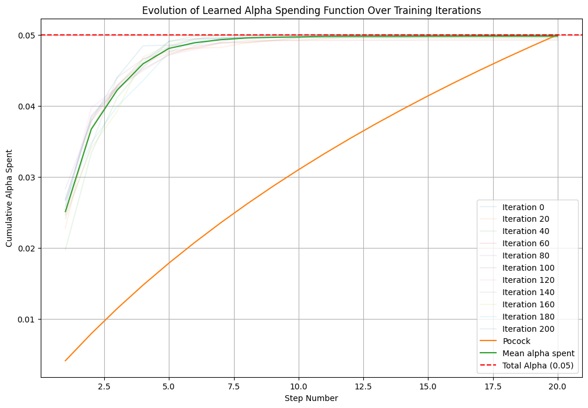

Reinforcement Learning for Optimal Alpha Spending Function in Sequential Hypothesis Testing#
Rambling by Jacqueline.
Introduction#
Product experiements are commonly in the form of a \(z\)-test (or \(t\)-test), comparing the 2 means of some KPI of both the control and test groups, say \(\mu_1\) and \(\mu_2\) respectively. The test is of course conducted after all data is collected. Furthermore, $\(H_0: \mu_1 = \mu_2\)\( \)\(H_A: \mu_1 < \mu_2\)$
Given significance level \(\alpha\), if we find statistical significance, \(H_0\) is rejected and we accept \(H_A\); the new product is considered a success. However, what happens when we do not find significance?
Say that we decided more data is needed and the data collection period is extended. Both the control and test groups grow in sample size. We then conduct the \(z\)-test a second time at some significance level. Why don’t we continue this process until we reached significance?
Sampling to reach a foregone conclusion#
Type I Error (False Positive Error) is the risk of incorrectly rejecting a true \(H_0\). In other words, we conclude the new version of the product is a success while it is not, risking shipping a product that does not have a positive effect on our customers.
Significance level \(\alpha\) is also the maximum probability of observing Type I Errors that the experimenter will accept in the long run.
If we conduct the test once, the probability of not getting a FP error is \(1-\alpha\). If we conduct the tests above \(k\) times, each at \(\alpha\), the change of observing at least one false positive grows $\(P(\geq 1 \text{ FP }) = 1 - P(< 1 \text{ FP }) = 1 - (1-\alpha)^k\)$
As \(k \to ∞\), just by chance, the probability you make at least one FP increases.
Sampling to reach a foregone conclusion, but formal.#
Let \(X_1, X_2, \dots \sim N(\mu, \sigma^2)\) where \(\sigma^2\) is known. Consider the test of \(H_0: \mu=0\) and \(H_A: \mu\neq 0\). Let \(S_n = \sum_{i=1}^nX_i\). Under \(H_0\), \(S_n \sim N(0, n\sigma^2)\). Thus the rejection region is such that \(|S_n|>1.96\sigma\sqrt{n}\) for \(\alpha=0.05\). We will show that as \(n\to ∞\), or, as we keep doing more iterim tests, we will eventually (in probability) arrive at the rejection region. The Law of Iterated Logarithm implies that
In other words, \(S_n\) is growing as fast as the denominator, which is unbounded.
Lan & DeMets (1983)#
Recall the typical 2 sample problem, where we want to compare the responses to treatments A and B, say the responses follows the distributions \(N(\mu_A, \sigma)\) and \(N(\mu_B, \sigma)\) respectively, and \(H_0: \mu_A = \mu_B\). Say there are \(n\) observations in each group (\(2n\) observations in total), and a \(z\)-test is conducted. Then we reject \(H_0\) if and only if
Now, say we collect data such that once \(n\) new observations are collected in each group, we conduct another \(z\)-test, only on the new data for the sake of independence. We will conduct \(K\) tests in total, and there will be \(2nK\) observations at the end. The statistic at step \(j\) is
where \(\delta^* = \frac{\delta}{\sqrt{2\sigma^2/n}}\). Then \(S_k = \sum_j^kY_j \sim N(\sigma^*k, k)\). Then the rejection region per interim test is defined by boundaries \(b_k\), namely
such that
Equivalently, let \(f\) be the joint pdf of the score statistics,
Lan & DeMets (1983) proposed the \(\alpha\)-spending function, \(\alpha^*\), a non-decreasing function. The significance level to use at each step is \(\alpha_k = \alpha^*(t_k) - \alpha^*(t_{k-1})\). They went further to suggest a functional form, namely
for the set up in Pocock (1977).
Introduction#
Sequential tests are statistical tests to solve the problem above. Well-known techniques include group sequential tests, always valid inference, and corrected-alpha approach. Sequential testing does not required the use of RL – the methodologies above are well-established and optimal.
However, I’m particularly interested in group sequential tests as a (Constrained) Markov Decision Process. Under this view, the optimal \(\alpha\) spending function is the optimal policy. This is a function that spreads \(\alpha\) over the sequence of \(z\)-tests, say \(\alpha_1, \dots, \alpha_k\).
One can describe what I’m doing below as this picture:
![300px-Bill_Gates'_Giant_Ping_Pong_Paddle.jpg]()
Constrained Markov Decision Process (CMDP)#
Consider a Decision Maker (DM) who is conducting a sequence of \(K\) 2-sample t-tests (unknown variance) between control and test groups with $\(H_0: \mu_C=\mu_T \)\( \)\(H_A: \mu_C < \mu_T\)\( At each test \)k$, the DM has 3 actions:
Stop and Reject. If \(H_A\) is true: \(+R_{TP} = 1\)
Stop and Reject. If \(H_0\) is true: \(-R_{FP} = -1\)
Continue Sampling: \(-c\) for sampling cost
At the terminal state \(K\), the DM stops and accepts.
import numpy as np
import torch
import torch.nn as nn
import torch.optim as optim
import torch.nn.functional as F
from collections import deque
# Class to simulate the sequential tests
class SequentialTEnv:
def __init__(self,
mu0=0.0,
mu1=0.5,
sigma=1.0,
alpha=0.05,
max_looks=50,
batch_size=10,
mc_precompute_n=5000,
seed=None):
self.mu0 = mu0 # control group
self.mu1 = mu1 # test group
self.sigma = sigma
self.alpha = alpha
self.max_looks = max_looks
self.batch_size = batch_size
self.mc_precompute_n = mc_precompute_n
self.rng = np.random.default_rng(seed)
self.reset()
def reset(self,
hypothesis=None):
# reseting for a new experiement
if hypothesis is not None:
self.hypothesis = hypothesis
else:
self.hypothesis = self.rng.choice([0, 1])
self.n_seen = 0
self.alpha_rem = self.alpha
self.done = False
self.history = []
return self._get_state()
def _sample_batch(self):
# Simulate the batch of control and test subjects
x_c = self.rng.normal(self.mu0,
self.sigma,
self.batch_size)
mu = self.mu0 if self.hypothesis == 0 else self.mu1
x_t = self.rng.normal(mu,
self.sigma,
self.batch_size)
return x_c, x_t
def _get_state(self):
# % seen, out of max subjects
frac_n = self.n_seen / (self.max_looks * self.batch_size)
# % alpha remaining
frac_alpha = self.alpha_rem / self.alpha
return np.array([frac_n, frac_alpha], dtype=np.float32)
def _ttest(self, x_c, x_t):
# calculate the t statistic
n1, n2 = len(x_c), len(x_t)
mean1, mean2 = np.mean(x_c), np.mean(x_t)
var1, var2 = np.var(x_c, ddof=1), np.var(x_t, ddof=1)
# estimate variance
se = np.sqrt(var1/n1 + var2/n2)
t_stat = (mean1 - mean2) / se
df_num = (var1/n1 + var2/n2)**2
df_den = (var1**2 / ((n1**2)*(n1-1))) + (var2**2 / ((n2**2)*(n2-1)))
df = df_num / df_den
from scipy.stats import t
p_val = 2 * (1 - t.cdf(abs(t_stat), df))
return t_stat, p_val
def step(self, action):
# Action = fraction of remaining alpha to spend
frac = np.clip(action, 0.0, 1.0)
# spend alpha
spend = frac * self.alpha_rem
spend = min(spend, self.alpha_rem)
self.alpha_rem -= spend
# Draw new batch
x_c, x_t = self._sample_batch()
self.n_seen += self.batch_size
# Pooled variance, Welch's t
t_stat, p_val = self._ttest(x_c, x_t)
reward, cost = 0.0, 0.0 # initialize
if p_val < spend:
self.done = True
if self.hypothesis == 1:
reward = 1.0 # true positive
else:
cost = 1.0 # false positive
elif self.n_seen >= self.max_looks * self.batch_size or self.alpha_rem <= 1e-12:
self.done = True
return self._get_state(), reward, cost, self.done
Framing the problem as a CMDP, our goal is to maximize power (probability of correct rejection) while under the constraint that the False Positive Rate is bounded by \(\alpha\). $\( P(\text{ Reject } H_0 | H_0 \text{ true })\leq \alpha\)$
The objective function is then, $\(J(\pi) = E_\pi(\text{Power}) \quad \text{ s.t. } \quad E_\pi(\text{Type I Error}) \leq \alpha \)\( The objective function is also optimized for power if we optimize for utility (reward). Equivalently, \)\(J(\pi)= E_{H_A}(\text{Utility}) \quad \text{ s.t. } \quad E_{H_0}(1\{\text{Reject}\}) \leq \alpha \)$
This is a contrained optimizatio problem, so we use Lagrangian Multiplier to formulate it into a saddle optimization problem: $\(L(\pi, \lambda) = J(\pi) - \lambda\times(E_{H_0}(\text{Reject}) - \alpha )\)\( We optimize \)L$ by Primal-Dual Alogrithm, i.e., iteratively
Policy Update: Maximize \(J(\pi)\) via Proximal Policy Optimization (PPO)
Multiplier Update: Minimize \(- \lambda\times(E_{H_0}(\text{Reject}) - \alpha )\) via dual ascent algoritm for constraint
# PPO requires 2 NN, Actor (Policy Net) and Critic (Value Net)
# PolicyNet:
# Input: current state (_get_state output)
# Output: prob dist over possible actions (possible alpha fraction spend)
class PolicyNet(nn.Module):
def __init__(self, state_dim=2, hidden=32):
super().__init__()
self.fc1 = nn.Linear(state_dim, hidden)
self.fc2 = nn.Linear(hidden, hidden)
self.mu = nn.Linear(hidden, 1)
self.log_std = nn.Parameter(torch.zeros(1))
def forward(self, x):
h = F.relu(self.fc1(x))
h = F.relu(self.fc2(h))
mu = torch.sigmoid(self.mu(h)) # action in [0,1]
std = torch.exp(self.log_std)
return mu, std # of action distribution
def sample(self, x):
# sample action
mu, std = self(x)
dist = torch.distributions.Normal(mu, std)
action = torch.clamp(dist.sample(), 0.0, 1.0)
log_prob = dist.log_prob(action)
return action, log_prob
# ValueNet:
# Input: current state
# Output: expected cumulative reward
class ValueNet(nn.Module):
def __init__(self, state_dim=2, hidden=32):
super().__init__()
self.fc1 = nn.Linear(state_dim, hidden)
self.fc2 = nn.Linear(hidden, hidden)
self.v = nn.Linear(hidden, 1)
def forward(self, x):
h = F.relu(self.fc1(x))
h = F.relu(self.fc2(h))
return self.v(h)
# Primal-dual update
def run_training(config):
# Initialization
env = SequentialTEnv(alpha=config['alpha'],
max_looks=config['max_looks'],
batch_size=config['batch_size'])
policy = PolicyNet()
value = ValueNet()
opt_pi = optim.Adam(policy.parameters(), lr=config['lr'])
opt_v = optim.Adam(value.parameters(), lr=config['lr'])
lambda_dual = torch.tensor(1.0, requires_grad=False)
# Initialize list to store cumulative alpha history
cumulative_alpha_history = []
simulation_interval = 20 # Record history every 20 iterations
# Training Loop
for it in range(config['train_iters']):
batch = []
for ep in range(config['batch_episodes']):
# Simulate under the null hypothesis to record alpha spending
s = env.reset(hypothesis=0)
done = False
ep_reward, ep_cost = 0.0, 0.0
log_probs, states, actions = [], [], []
episode_cumulative_alpha = []
cumulative_spent = 0.0
while not done:
st = torch.tensor(s, dtype=torch.float32).unsqueeze(0)
# Use the current policy to sample action
a, logp = policy.sample(st)
# Calculate alpha spent in this step
# Need to temporarily update env's alpha_rem to calculate alpha_to_spend correctly for recording
temp_alpha_rem = env.alpha_rem
alpha_to_spend = a.item() * temp_alpha_rem
alpha_to_spend = min(alpha_to_spend, temp_alpha_rem)
cumulative_spent += alpha_to_spend
episode_cumulative_alpha.append(cumulative_spent)
s_next, r, c, done = env.step(a.item())
log_probs.append(logp)
states.append(st)
actions.append(a)
ep_reward += r
ep_cost += c
s = s_next
# Pad episode_cumulative_alpha to max_looks
while len(episode_cumulative_alpha) < config['max_looks']:
if len(episode_cumulative_alpha) > 0:
episode_cumulative_alpha.append(episode_cumulative_alpha[-1])
else:
episode_cumulative_alpha.append(0.0) # Should not happen if at least one step is taken
batch.append((ep_reward, ep_cost, torch.stack(log_probs), np.array(episode_cumulative_alpha)))
# Compute averages for training
rewards = np.array([b[0] for b in batch])
costs = np.array([b[1] for b in batch])
avg_reward = rewards.mean()
avg_cost = costs.mean()
# Dual update
lambda_dual = torch.clamp(lambda_dual + config['lr_dual'] * (avg_cost - config['alpha']), min=0.0)
# Policy update (surrogate loss)
L_terms = []
for R, C, logps, _ in batch: # Ignore cumulative alpha for policy update
L_terms.append((R - lambda_dual.item() * C) * logps.sum())
loss_pi = -torch.stack(L_terms).mean()
opt_pi.zero_grad()
loss_pi.backward()
opt_pi.step()
# Record cumulative alpha history at intervals
if (it + 1) % simulation_interval == 0 or it == 0:
# Compute average cumulative alpha across batch episodes
batch_cumulative_alpha = np.stack([b[3] for b in batch])
average_cumulative_alpha_per_step = np.mean(batch_cumulative_alpha, axis=0)
cumulative_alpha_history.append(average_cumulative_alpha_per_step)
# Logging
if it % 10 == 0:
print(f"Iter {it}: reward={avg_reward:.3f}, cost={avg_cost:.3f}, lambda={lambda_dual.item():.3f}")
return policy, value, cumulative_alpha_history
DEFAULT_CONFIG = {
'alpha': 0.05,
'max_looks': 20,
'batch_size': 10,
'lr': 1e-3,
'lr_dual': 1e-2,
'train_iters': 200, # num times NN weights are updated
'batch_episodes': 50, # in each train iter, experiments repetition
}
if __name__ == "__main__":
policy, value = run_training(DEFAULT_CONFIG)
Iter 0: reward=0.000, cost=0.060, lambda=1.000
Iter 10: reward=0.000, cost=0.040, lambda=0.999
Iter 20: reward=0.000, cost=0.040, lambda=0.999
Iter 30: reward=0.000, cost=0.060, lambda=0.999
Iter 40: reward=0.000, cost=0.040, lambda=1.000
Iter 50: reward=0.000, cost=0.080, lambda=0.999
Iter 60: reward=0.000, cost=0.040, lambda=0.999
Iter 70: reward=0.000, cost=0.060, lambda=0.998
Iter 80: reward=0.000, cost=0.060, lambda=1.000
Iter 90: reward=0.000, cost=0.040, lambda=1.001
Iter 100: reward=0.000, cost=0.040, lambda=1.001
Iter 110: reward=0.000, cost=0.060, lambda=1.002
Iter 120: reward=0.000, cost=0.080, lambda=1.001
Iter 130: reward=0.000, cost=0.000, lambda=1.000
Iter 140: reward=0.000, cost=0.020, lambda=1.000
Iter 150: reward=0.000, cost=0.020, lambda=0.999
Iter 160: reward=0.000, cost=0.020, lambda=0.997
Iter 170: reward=0.000, cost=0.080, lambda=0.996
---------------------------------------------------------------------------
KeyboardInterrupt Traceback (most recent call last)
Input In [5], in <cell line: 11>()
1 DEFAULT_CONFIG = {
2 'alpha': 0.05,
3 'max_looks': 20,
(...)
8 'batch_episodes': 50, # in each train iter, experiments repetition
9 }
11 if __name__ == "__main__":
---> 12 policy, value = run_training(DEFAULT_CONFIG)
Input In [4], in run_training(config)
33 st = torch.tensor(s, dtype=torch.float32).unsqueeze(0)
34 # Use the current policy to sample action
---> 35 a, logp = policy.sample(st)
37 # Calculate alpha spent in this step
38 # Need to temporarily update env's alpha_rem to calculate alpha_to_spend correctly for recording
39 temp_alpha_rem = env.alpha_rem
Input In [3], in PolicyNet.sample(self, x)
23 def sample(self, x):
24 # sample action
---> 25 mu, std = self(x)
26 dist = torch.distributions.Normal(mu, std)
27 action = torch.clamp(dist.sample(), 0.0, 1.0)
File /Library/Frameworks/Python.framework/Versions/3.10/lib/python3.10/site-packages/torch/nn/modules/module.py:1511, in Module._wrapped_call_impl(self, *args, **kwargs)
1509 return self._compiled_call_impl(*args, **kwargs) # type: ignore[misc]
1510 else:
-> 1511 return self._call_impl(*args, **kwargs)
File /Library/Frameworks/Python.framework/Versions/3.10/lib/python3.10/site-packages/torch/nn/modules/module.py:1520, in Module._call_impl(self, *args, **kwargs)
1515 # If we don't have any hooks, we want to skip the rest of the logic in
1516 # this function, and just call forward.
1517 if not (self._backward_hooks or self._backward_pre_hooks or self._forward_hooks or self._forward_pre_hooks
1518 or _global_backward_pre_hooks or _global_backward_hooks
1519 or _global_forward_hooks or _global_forward_pre_hooks):
-> 1520 return forward_call(*args, **kwargs)
1522 try:
1523 result = None
Input In [3], in PolicyNet.forward(self, x)
16 def forward(self, x):
---> 17 h = F.relu(self.fc1(x))
18 h = F.relu(self.fc2(h))
19 mu = torch.sigmoid(self.mu(h)) # action in [0,1]
File /Library/Frameworks/Python.framework/Versions/3.10/lib/python3.10/site-packages/torch/nn/modules/module.py:1511, in Module._wrapped_call_impl(self, *args, **kwargs)
1509 return self._compiled_call_impl(*args, **kwargs) # type: ignore[misc]
1510 else:
-> 1511 return self._call_impl(*args, **kwargs)
File /Library/Frameworks/Python.framework/Versions/3.10/lib/python3.10/site-packages/torch/nn/modules/module.py:1520, in Module._call_impl(self, *args, **kwargs)
1515 # If we don't have any hooks, we want to skip the rest of the logic in
1516 # this function, and just call forward.
1517 if not (self._backward_hooks or self._backward_pre_hooks or self._forward_hooks or self._forward_pre_hooks
1518 or _global_backward_pre_hooks or _global_backward_hooks
1519 or _global_forward_hooks or _global_forward_pre_hooks):
-> 1520 return forward_call(*args, **kwargs)
1522 try:
1523 result = None
File /Library/Frameworks/Python.framework/Versions/3.10/lib/python3.10/site-packages/torch/nn/modules/linear.py:116, in Linear.forward(self, input)
115 def forward(self, input: Tensor) -> Tensor:
--> 116 return F.linear(input, self.weight, self.bias)
KeyboardInterrupt:
Visualize alpha spending over iterations#
Subtask:#
Plot the recorded cumulative alpha spending curves for different training iterations on the same graph to show the evolution of the learned alpha spending function.
Reasoning: Plot the recorded cumulative alpha spending curves for different training iterations on the same graph to show the evolution of the learned alpha spending function.
np.array(cumulative_alpha_history).sum(axis=0).shape
(20,)
import matplotlib.pyplot as plt
# Run the training with the updated function to get the history
policy, value, cumulative_alpha_history = run_training(DEFAULT_CONFIG)
Iter 0: reward=0.000, cost=0.040, lambda=1.000
Iter 10: reward=0.000, cost=0.100, lambda=1.000
Iter 20: reward=0.000, cost=0.020, lambda=1.001
Iter 30: reward=0.000, cost=0.020, lambda=1.001
Iter 40: reward=0.000, cost=0.060, lambda=1.001
Iter 50: reward=0.000, cost=0.060, lambda=1.002
Iter 60: reward=0.000, cost=0.100, lambda=1.002
Iter 70: reward=0.000, cost=0.060, lambda=1.002
Iter 80: reward=0.000, cost=0.000, lambda=1.003
Iter 90: reward=0.000, cost=0.040, lambda=1.002
Iter 100: reward=0.000, cost=0.020, lambda=1.001
Iter 110: reward=0.000, cost=0.000, lambda=1.001
Iter 120: reward=0.000, cost=0.000, lambda=1.000
Iter 130: reward=0.000, cost=0.020, lambda=0.998
Iter 140: reward=0.000, cost=0.060, lambda=0.998
Iter 150: reward=0.000, cost=0.040, lambda=0.999
Iter 160: reward=0.000, cost=0.000, lambda=0.996
Iter 170: reward=0.000, cost=0.080, lambda=0.997
Iter 180: reward=0.000, cost=0.020, lambda=0.997
Iter 190: reward=0.000, cost=0.120, lambda=0.998
max_steps = DEFAULT_CONFIG['max_looks']
step_numbers = list(range(1, max_steps + 1))
simulation_interval = 20 # This should match the interval used in run_training
plt.figure(figsize=(12, 8))
for i, cumulative_alpha in enumerate(cumulative_alpha_history):
iteration = i * simulation_interval
plt.plot(step_numbers, cumulative_alpha, label=f'Iteration {iteration}', alpha=0.1 )
def alpha_star(k, alpha=0.05):
k=np.array(k)
k = k/k.max()
return alpha*np.log(1+(np.e-1)*k)
plt.plot(k, alpha_star(step_numbers), label=f'Pocock' )
plt.plot(step_numbers,np.array(cumulative_alpha_history).mean(axis=0), label=f'Mean alpha spent')
plt.xlabel('Step Number')
plt.ylabel('Cumulative Alpha Spent')
plt.title('Evolution of Learned Alpha Spending Function Over Training Iterations')
plt.axhline(y=DEFAULT_CONFIG['alpha'], color='r', linestyle='--', label=f'Total Alpha ({DEFAULT_CONFIG["alpha"]})')
plt.legend()
plt.grid(True)
plt.show()

So interesting! I was expecting some sort of convergence to Lan & DeMets, but the RL learned policy suggests spending way more alpha at the begining of the trial. Both alpha spending strategies keep early significance level high, keeping the trial going to accumulate more data. I wonder which functional form the RL converged to.